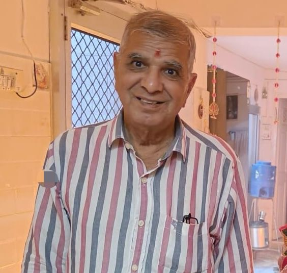

RKJ Foundation is a quiet effort to lift those who carry the heaviest weight — the abandoned, the unheard, the ones still finding their footing. Every tree we plant, every hand we hold, every young mind we guide carries forward a belief passed down through three generations.
This mission was first inspired by my great-grandfather's belief that service to others is the greatest purpose of life. A conviction he lived without fanfare, teaching by doing — that kindness compounds, and that the smallest act, done consistently, can shape a community.
That belief was handed down, generation to generation, like a seed wrapped in cloth. Today it has grown roots, and leaves, and a name: RKJ Foundation.

Even in his later years, he remains devoted to helping people and creating small but meaningful change in the community. He rarely speaks of it. He simply shows up — for the elderly neighbour, the young student, the worker waiting quietly at the door.
The foundation is the shape his devotion takes. Everything we do is an attempt to match the steadiness of his hands with the scale of what's possible.
Through this journey we try to support people in different ways. We don't specialise in a single cause — life rarely does. Wherever a hand is needed, we try to be there.
This page simply shares glimpses of that journey. Volunteer a Saturday, share a skill, fund a tree, or just introduce someone who needs us. There is always room.